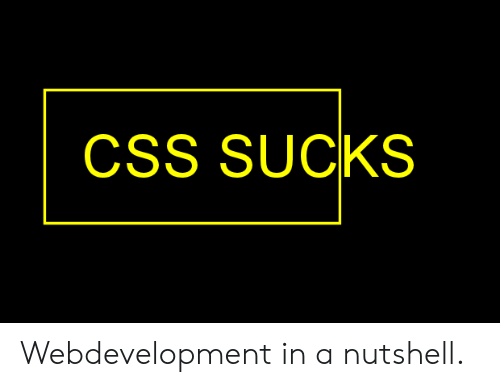

About
The website linked is the course plan for Software development for the webb.
So far during this course we have covered how to work with git, mainly git bash. With this we have learned how to setup repos using the terminal only with commands for adding new files and code to the repos. This website is where my repports will be added during the course it also contatins information about me and who I am.

url for my git repo My repo
url for the course repo course repo
Here so footer does not cut text off